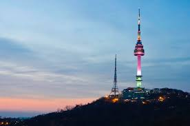
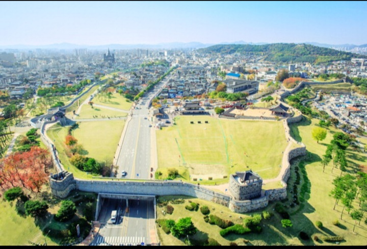

Capital Area
서울 · 경기도
서울은 대한민국의 수도이며 다양한 역사와 현대 문화가 공존하는 도시이고, 경기도는 서울을 둘러싸며 산업·주거·관광이 발달한 지역이다. 두 지역은 교통과 생활권이 밀접하게 연결되어 대한민국의 핵심 중심지로 여겨진다.
서울: 경복궁, 남산타워, 명동
경기: 에버랜드, 수원 화성, 아침고요수목원

SEOUL
GYEONGGI